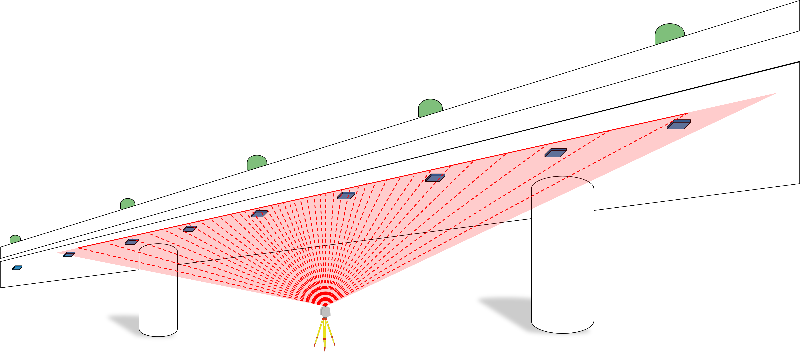

About Me

Welcome to my digital space! I am a Scientific Employee at the Technical University of Munich, specializing in Point Cloud processing, segmentation, and visualization. My work bridges academic research with industrial and environmental applications, driving meaningful innovation.


Projects
PROVILAS
Exploring innovative ways to analyze a time series of spatial data using LiDAR technology for enhanced spatio-temporal understanding in structural health monitoring.
Learn MoreProject 2: Point Cloud Data Processing
Developing real-time point cloud processing algorithms for high-efficiency geometric computations in industrial settings.
Learn MoreProject 3: Vibration Analysis
Leveraging advanced frequency analysis techniques to study vibrations in structural systems and mechanical components.
Learn More